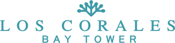

South Padre Island · Texas
Welcomehome
Thank you for placing your trust in us. Inside this box you will find the finish options for your home. Before you choose, a few words from us.
View BrochureOpens in your browser. No download required.